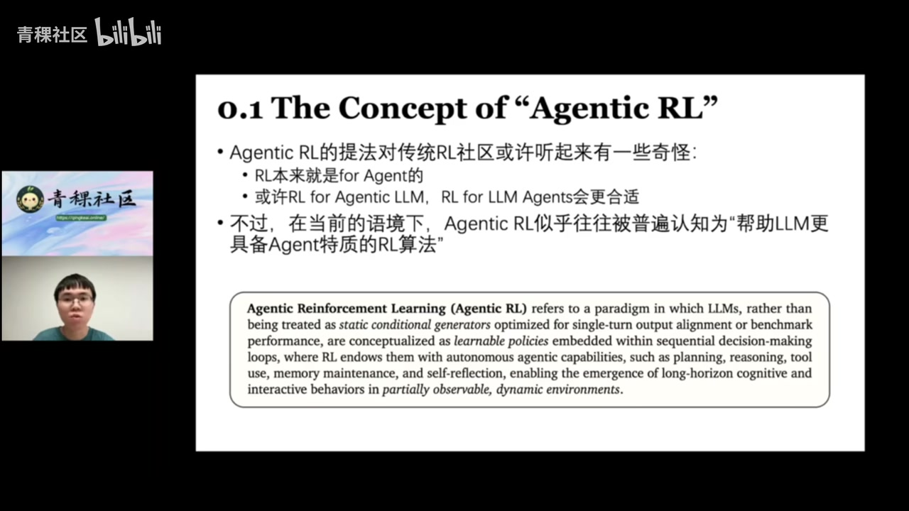
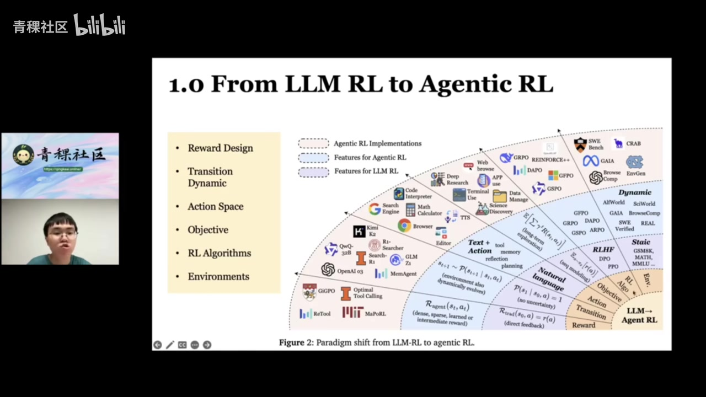
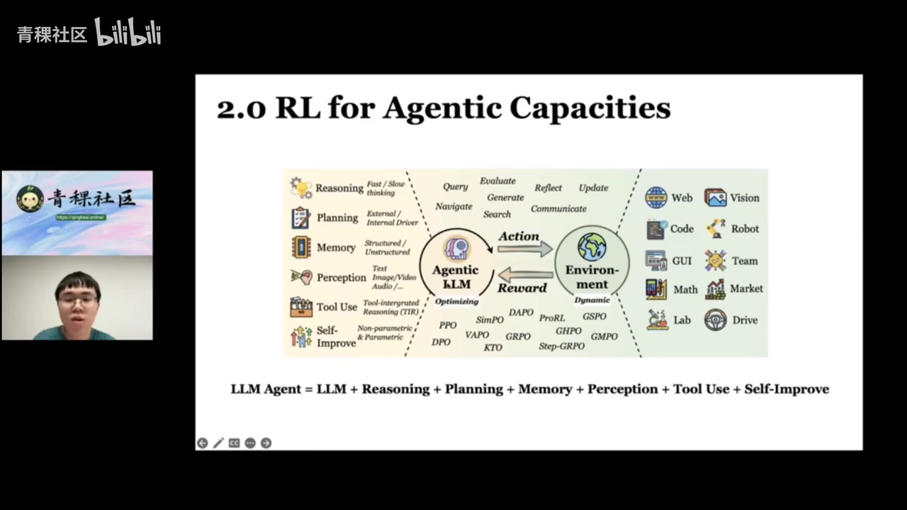
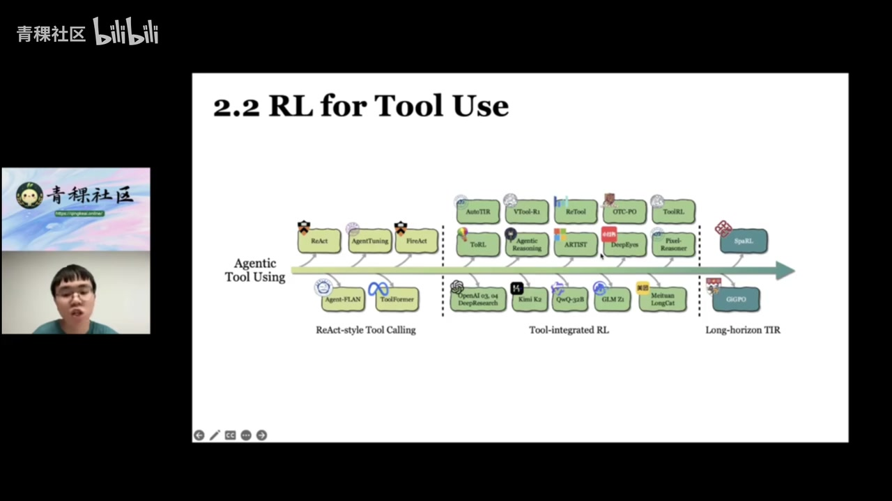
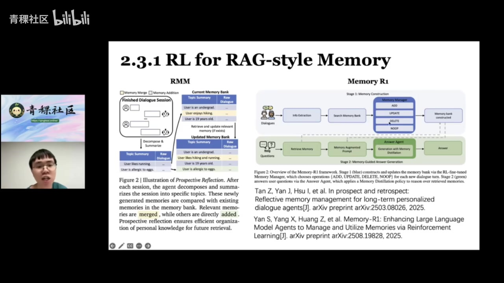
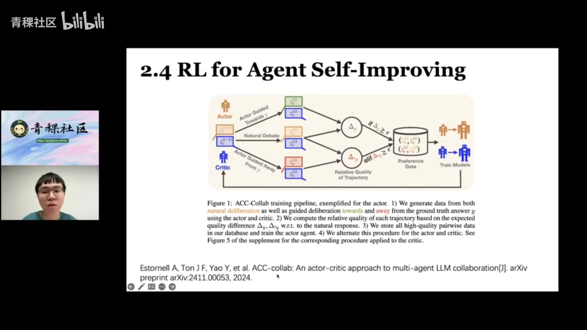
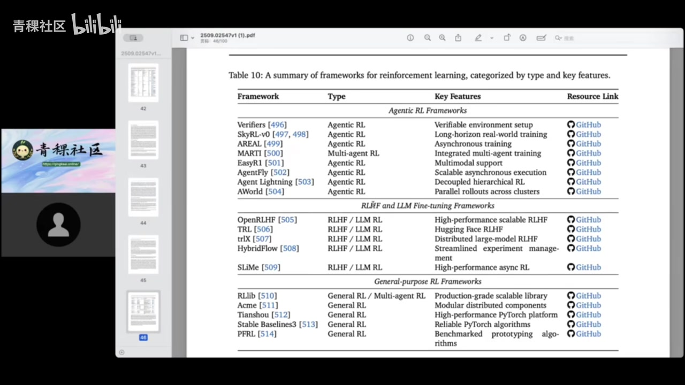

01｜定义与边界
Agentic RL 的核心不是“给语言模型做任意强化学习”，而是让模型在动态、部分可观测环境中，通过多轮行动逐渐成为可自主决策的智能体。
01:20–04:10 报告明确排除三类邻近主题：只做人类价值对齐的 RLHF、传统非语言模型强化学习，以及仅在静态单轮基准上刷分的推理 RL。研究对象是会改变环境、调用工具并决定何时继续或终止的语言智能体。

从 T=1 到多轮
偏好对齐常可视为一次输出；Agentic RL 面对持续的状态转移与长程信用分配。
从文本到行动
动作空间扩展到搜索、代码、GUI、记忆读写与其他外部工具。
从静态到动态
网页、软件和真实世界会随动作与时间变化，返回结果也可能不确定。
从单一奖励到长期目标
近期收益、延迟结果与多步归因共同决定训练目标。

02｜六类能力谱系
报告把智能体写成“语言模型 + 六类能力”，重点不是堆模块，而是让强化学习把这些能力内化为可迁移的策略。

| 能力 | RL 的作用 | 主要难点 |
|---|---|---|
| 规划 | 外部搜索引导或训练模型内生规划 | 路径评价与长程归因 |
| 工具使用 | 学习何时调用、参数如何填写与何时停止 | 工具幻觉、接口变化与多轮反馈 |
| 记忆 | 学习检索、更新、删除和摘要 | 长上下文膨胀与错误记忆 |
| 感知/推理 | 扩展到图像、视频、音频及快慢思考 | 跨模态反馈可验证性 |
| 自我改进 | 诊断失败、积累经验、生成训练任务 | 避免把错误经验反复放大 |
03｜规划、工具与记忆
三条能力线共同指向同一变化：把人工写死的工作流，逐步改造成由策略自己决定的交互过程。


04｜自我改进与垂类训练
自我改进不只是在提示词里“反思”，更重要的是把诊断、纠错、经验复用和任务生成转化为可学习能力。
28:40–35:20 报告区分三类路线：语言层面的自我修正、把纠错能力内化进参数，以及在少数据或零数据条件下通过 self‑play 迭代训练。AgentTracer 案例强调长轨迹中找到“哪一步导致整体失败”本身就是稀缺能力。

36:00–49:50 垂类部分覆盖搜索/深度研究、代码、数学、多智能体与游戏。代码任务从生成单函数走向仓库级修复；多智能体训练仍受规模、通信和“究竟更新哪些角色”制约。
05｜环境、框架与开放问题
Agentic RL 的瓶颈越来越像系统工程：环境必须可交互、可复现、可验证，还要足够丰富，才能支撑通用能力。

52:50–56:50 三个重点方向是可信性（安全、工具幻觉与谄媚）、扩大 Agent 训练规模，以及扩大环境规模。旧环境过于简单，真实网页又随时间漂移；自动奖励设计与生成式环境/世界模型因此成为关键基础设施。
证据边界：本文忠实整理视频中的讲解、论文图表与演讲者判断，并非对论文复现实验或独立同行评审。自动转录中的专名已结合幻灯片校正；仍不确定的缩写和动态数字应以原论文或项目页面为准。